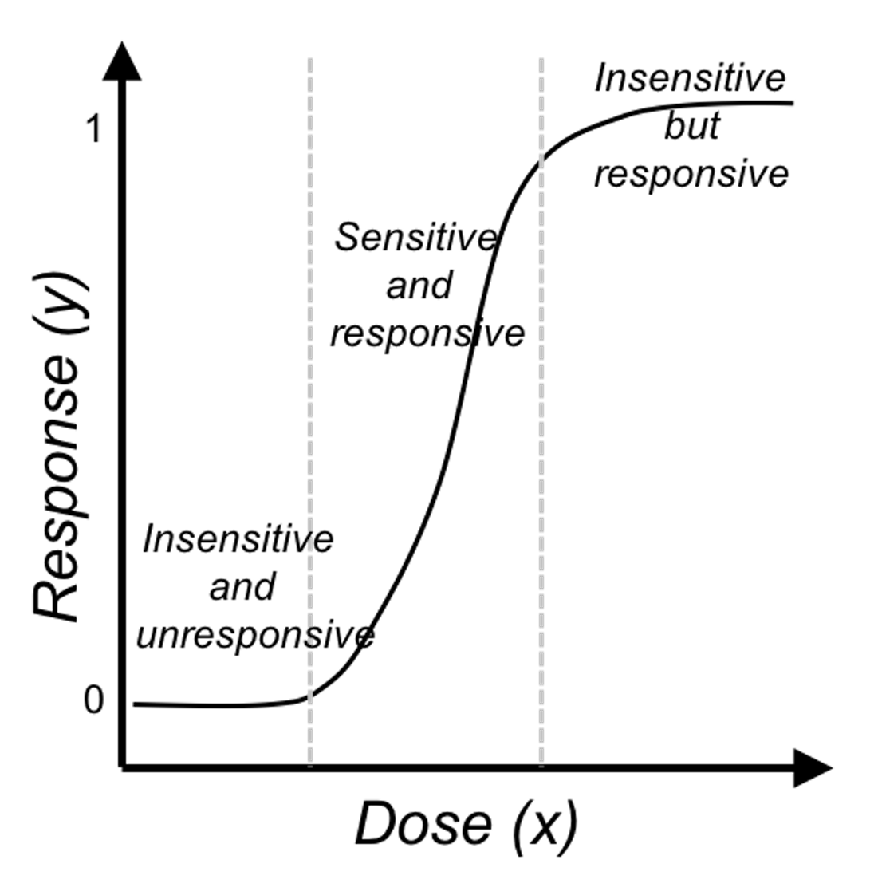
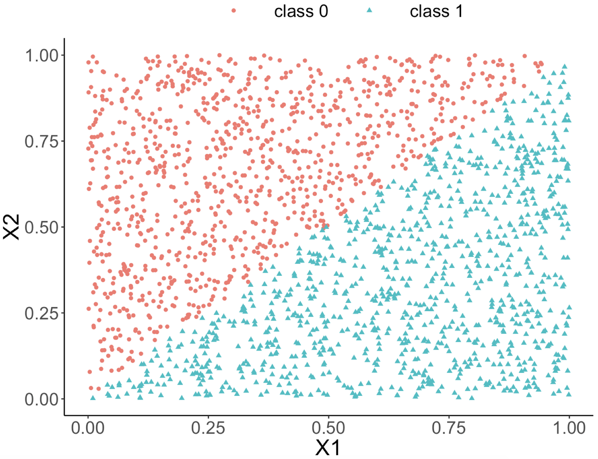

Remarks
More about the logistic function
Like the linear regression model, Eq. (27) seems like one model that explains all the data points74 We have mentioned that a model with this trait is called a global model.. This observation is good, but we may easily overlook its subtle complexity. As shown in Figure 42, the logistic regression model is able to encapsulate a complex relationships between \(x\) (the dose) with \(y\) (the response to treatment) as one succinct mathematical form. This is remarkable, probably unusual, and unmistakably beautiful.
 Figure 42: The three regions of the logistic function
And the regression coefficients flexibly tune the exact shape of the logistic function for each dataset, as shown in Figure 43.
On the other hand, the logistic function is not the only choice. There are some other options, i.e., Chester Ittner Bliss used the cumulative normal distribution function to perform the transformation and called his model the probit regression model. There is an interesting discussion of this piece of history in statistics in Chapter 9 of the book75 Cramer, J.S., Logit Models from Economics and Other Fields, Cambridge University Press, 2003..
 Figure 43: Three examples of the logistic function
Figure 43: Three examples of the logistic function
Does the logistic function make sense? — An EDA approach
Figure 28 outlines the main premise of the logistic regression model. It remains unknown whether or not this is a practical assumption. Here, we show how we could evaluate this assumption in a specific dataset. Let’s use the AD dataset and pick up the predictor, HippoNV, and the outcome variable DX_bl.
First, we create a data table like the one shown in Table 6. We discretize the continuous variable HippoNV into distinct levels, and compute the prevalence of AD incidences within each level (i.e., the \(Pr(y=1|x)\)). The following R code serves this data processing purpose.
# Create the frequency table in accordance of categorization
# of HippoNV
temp = quantile(AD$HippoNV,seq(from = 0.05, to = 0.95,
by = 0.05))
AD$HippoNV.category <- cut(AD$HippoNV, breaks=c(-Inf,
temp, Inf))
tempData <- data.frame(xtabs(~DX_bl + HippoNV.category,
data = AD))
tempData <- tempData[seq(from = 2, to =
2*length(unique(AD$HippoNV.category)),
by = 2),]
summary(xtabs(~DX_bl + HippoNV.category, data = AD))
tempData$Total <- colSums(as.matrix(xtabs(~DX_bl +
HippoNV.category,data = AD)))
tempData$p.hat <- 1 - tempData$Freq/tempData$Total
tempData$HippoNV.category = as.numeric(tempData$HippoNV.category)
str(tempData)We use the str() function to visualize the data we have converted: \(20\) levels of HippoNV have been created, denoted by the variable HippoNV.category; Total denotes the total number of subjects within each level; and p.hat denotes the proportion of the diseased subjects within each level (i.e., the \(Pr(y=1|x)\)).
str(tempData)
## 'data.frame': 20 obs. of 5 variables:
## $ DX_bl : Factor w/ 2 levels "0","1": 2 2 2 2 2 2 ...
## $ HippoNV.category: num 1 2 3 4 5 6 7 8 9 10 ...
## $ Freq : int 24 25 25 21 22 15 17 17 19 11 ...
## $ Total : num 26 26 26 26 26 25 26 26 26 34 ...
## $ p.hat : num 0.0769 0.0385 0.0385 0.1923 0.1538We draw a scatterplot of HippoNV.category versus p.hat, as shown in Figure 44. We also use the loess method, which is a nonparametric smoothing method76 Related methods will be introduced in Chapter 9., to fit a smooth curve of the scatter data points. Figure 44 exhibits a similar pattern as Figure 28. This provides an empirical justification of the use of the logistic regression model in this dataset.
 Figure 44: The empirical relationship between
Figure 44: The empirical relationship between HippoNV and DX_bl takes a shape as the logistic function
# Draw the scatterplot of HippoNV.category
# versus the probability of normal
library(ggplot2)
p <- ggplot(tempData, aes(x = HippoNV.category, y = p.hat))
p <- p + geom_point(size=3)
p <- p + geom_smooth(method = "loess")
p <- p + labs(title ="Empirically observed probability of normal"
, xlab = "HippoNV")
print(p)Regression vs. tree models
A decision tree model draws a distinct type of decision boundary , as illustrated in Figure 45. Think about how a tree is built: at each node, a split is implemented based on one single variable, and in Figure 45 the classification boundary is either parallel or perpendicular to one axis.
Figure 45: Illustration of a decision tree model for a binary classification problem (i.e., the solid circles and empty squares represent data points from two classes), built on two predictors (i.e., \(x_1\) and \(x_2\)); (left) is the scatterplot of the data overlaid with the decision boundary of the decision tree model, which is shown in the (right)

This implies that, when applying a decision tree to a dataset with linear relationship between predictors and outcome variables, it may not be an optimal choice. In the following example, we simulate a dataset and apply a decision tree and a logistics regression model to the data, respectively. The training data, and the predicted classes for each data point from the logistic regression and decision models are shown in Figures 46, 47 and 48, respectively. It can be seen that the classification boundary from the logistics regression model is linear, while the one from the decision tree is parallel to the axis. Decision tree is not able to capture the linear relationship in the data. The R code for this experiment is shown in below.
 Figure 46: Scatterplot of the generated dataset
Figure 46: Scatterplot of the generated dataset
 Figure 47: Decision boundary captured by a logistic regression model
require(rpart)
ndata <- 2000
X1 <- runif(ndata, min = 0, max = 1)
X2 <- runif(ndata, min = 0, max = 1)
data <- data.frame(X1,X2)
data <- data %>% mutate( X12 = 0.5 * (X1 - X2), Y =
ifelse(X12>=0,1,0))
ix <- which( abs(data$X12) <= 0.05)
data$Y[ix] <- ifelse(runif( length(ix)) < 0.5, 0, 1)
data <- data %>% select(-X12) %>% mutate(Y =
as.factor(as.character(Y)))
ggplot(data,aes(x=X1,y=X2,color=Y))+geom_point()
linear_model <- glm(Y ~ ., family = binomial(link = "logit"),
data = data)
tree_model <- rpart( Y ~ ., data = data)
pred_linear <- predict(linear_model, data,type="response")
pred_tree <- predict(tree_model, data,type="prob")[,1]
data_pred <- data %>% mutate(pred_linear_class =
ifelse(pred_linear <0.5,0,1)) %>%mutate(pred_linear_class =
as.factor(as.character(pred_linear_class)))%>%
mutate(pred_tree_class = ifelse( pred_tree <0.5,0,1)) %>%
mutate( pred_tree_class =
as.factor(as.character(pred_tree_class)))
ggplot(data_pred,aes(x=X1,y=X2,color=pred_linear_class))+
geom_point()
ggplot(data_pred,aes(x=X1,y=X2,color=pred_tree_class))+
geom_point()
 Figure 48: Decision boundary captured by the tree model
Figure 48: Decision boundary captured by the tree model
Can we use a tree model for regression?
The answer is yes. There is nothing preventing us from modifying the tree-learning process as we have presented in Chapter 2 for predicting continuous outcome. You only need to modify the IG, i.e., to create a similar counterpart for continuous outcomes.
Without going into further technical details, we present the modified 6-step R pipeline for a regression tree.
# AGE, PTGENDER and PTEDUCAT are used as the
# predictor variables.
# MMSCORE (a numeric value) is the outcome.
# Step 1: read data into R
url <- paste0("https://raw.githubusercontent.com",
"/analyticsbook/book/main/data/AD.csv")
AD <- read.csv(text=getURL(url))
# Step 2: data preprocessing
X <- AD[,2:16]
Y <- AD$MMSCORE
data <- data.frame(X,Y)
names(data)[16] <- c("MMSCORE")
# Create a training data (half the original data size)
train.ix <- sample(nrow(data),floor( nrow(data)/2) )
data.train <- data[train.ix,]
# Create a testing data (half the original data size)
data.test <- data[-train.ix,]
# Step 3: build the tree
# for regression problems, use method="anova"
tree_reg <- rpart( MMSCORE ~ ., data.train, method="anova")
# Step 4: draw the tree
require(rpart.plot)
prp(tree_reg, nn.cex=1)
# Step 5 -> prune the tree
tree_reg <- prune(tree_reg,cp=0.03)
prp(tree_reg,nn.cex=1)
# Step 6 -> Predict using your tree model
pred.tree <- predict(tree_reg, data.test)
cor(pred.tree, data.test$MMSCORE)
#For regression model, you can use correlation
# to measure how close are your predictions
# with the true outcome values of the data points
 Figure 49: Decision tree to predict
Figure 49: Decision tree to predict MMSCORE using PTEDUCAT and AGE
The learned tree is shown in Figure 49. In the EDA analysis shown in Chapter 2, it has been shown that the relationship between MMSCORE and PTEDUCAT changes substantially according to different levels of AGE. Here shows the decision tree can also capture the interaction between PTEDUCAT, AGE and MMSCORE.